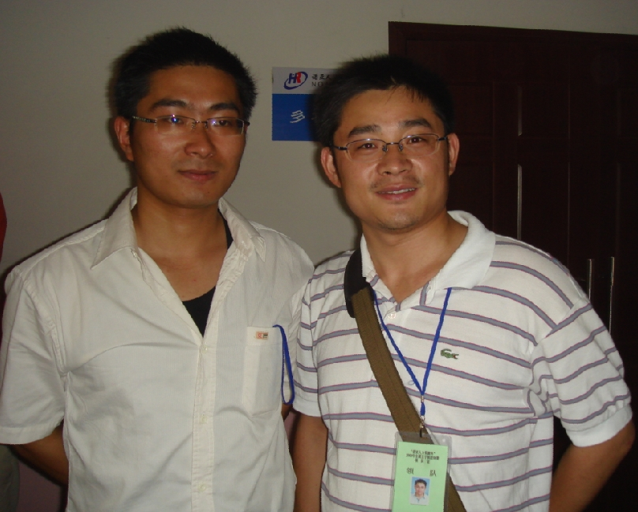

五子棋中的趣事！
首页
五子棋交流
#1 五子棋中的趣事！ 作者：小丸.net 发表时间：2008-6-10 20:07:44
１．江苏的棋手中有两个郑勇，一个是南京的郑勇，也就是这次参加全团赛江苏二队的四台郑勇，另外一个是吴江的郑勇，这两个郑勇，名字一样，而且都出现在江苏，实属罕见。
２．先给大家看张照片：

这张照片是在全团赛上拍下来的珍贵相片，左面的是棋情（江苏的谢维详，此次全团赛效力于浙江队二台），右侧的是合肥的领队清清，此二人长得十分相似，以至于在全团赛上他们说得更多的是，你认错人了。
#2 Re:五子棋中的趣事！ 作者：有志青年 发表时间：2008-6-10 20:23:43
像，非常像！
#3 Re:五子棋中的趣事！ 作者：逆刃 发表时间：2008-6-11 12:30:50
长得的确比较像，呵呵！
#4 Re:五子棋中的趣事！ 作者：隐藏菜系 发表时间：2008-6-11 14:23:34
哈哈 原来棋情不是胖子啊!
#5 Re:五子棋中的趣事！ 作者：mushi 发表时间：2008-6-11 20:53:23
只能说很想
#6 Re:五子棋中的趣事！ 作者：五子酷 发表时间：2008-6-12 14:21:55
还能勉强分出来。
#7 Re:五子棋中的趣事！ 作者：南京小飞机 发表时间：2008-7-16 11:59:25
呵呵 现在认得了
#8 Re:五子棋中的趣事！ 作者：billli 发表时间：2008-7-28 22:19:14
离我挺近的哈，什么时候去拜访下
#9 Re:五子棋中的趣事！ 作者：自来自去 发表时间：2008-8-11 20:52:35
呵呵，好玩的大家一起乐！